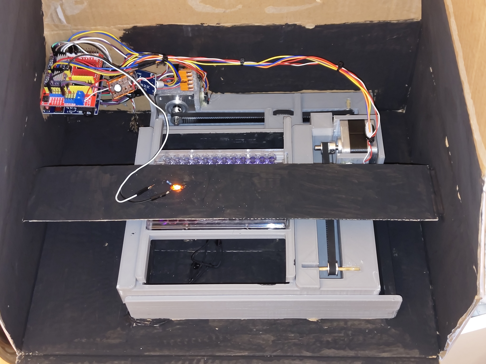

Well-Reader

Well Plate Reader
A well plate is a collection of 96 open cylindric containers next to each other, each having a volume of roughly 0.3ml. A well plate reader has the ability to measure the absorption of a substance put into those 96 containers. Aside from that it can also measure fluorescent intensity.
White Box View
In the essence this device has a photometer to measure light intensity at some wavelength and a light that can emit on a precise wavelength. So an LED and a sensor. The difficulty of the well plate reader is that it should have the ability to measure multiple containers and positions at the sequentially or at the same time. Either you now use 96 lights (or an even distribution of light) combined with 96 sensors, or you move the plate in a 2D plane around to take measurements for each slot.
2D Movement
Instead of moving the both the sensor and light emitter at the same time in a 2D plane, it is much easier to move only one plate in a 2D plane. The movement is done using Nema17 motors (cheap) with working drivers. In one direction the plate is moved on a carrier using one Nema17, while this whole construction is moved using another Nema17 with a belt. The images describe the functionality much better btw.